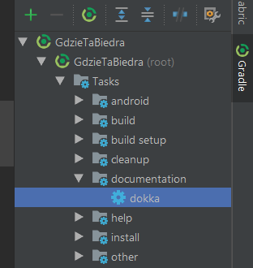
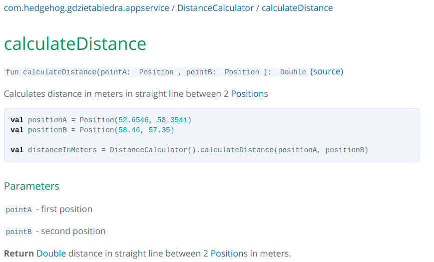
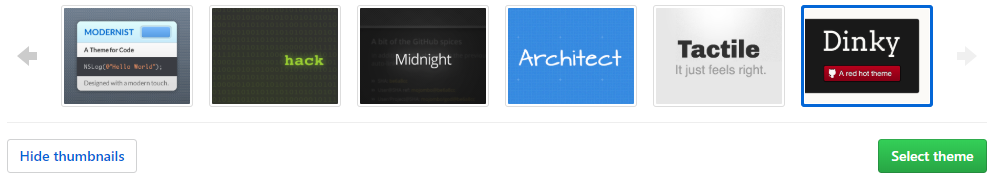

This is third part in series of articles about Android build configuration, all parts will be linked right below.
#1 Build basics
#2 Build time optimization
#3 Documentation with Dokka
Homework
Wait what? You’ve wrote beautiful self-documenting code and someone tells you to create DOCUMENTATION for it? It’s already there! Well named methods and variables, design patterns used.
If anyone wants to know how it works, he just needs to read through it - well named method by well named method…
I know IDEs are supporting that and you just need to click on method name or class to go there but be a good person, create documentation of at least public methods. Forcing people (or your future self) to go through code each time you want to understand (or remind) how it works is cruel.
Self-documenting code is micro-documentation, it won’t ever show the big picture.
So if you are working with someone more than yourself - docs can help others understand your intention during code review. If you are creating library - well I won’t be using it if it’s not documented.
I understand being rebellious about it - I was. Until I had to work with big undocumented project, that was dependent on few other projects, with many hacks done to meet those other projects requirements, without any trace of information why something was done in certain way.
Where to start
Start with attitude. It won’t be rocket science, you’ve already wrote a code that works (and it’s unit tested obviously), now just describe it in more human manner. It might seem boring, but programmers often lack soft skills like basic ability to communicate intents - take it as an exercise to make yourself a better professional.
What’s worth documenting?
Not everything of course. What is the point of documenting methods like fun add(a: Int, b: Int): Int? And private methods, as they are not exposed to a class or library client? It actually depends on your organization standards. I’m in favor of documenting ALL public methods, interfaces, classes, variables etc. but the same time keeping as much as possible as internal or private implementations. This way you’ll need to document as little as possible and keep implementation nicely separated from exposed interfaces.
What if there’s something hacky in your code that should be documented (for those who’ll wander into it), but it’s deeply in the implementation layer? Make a good old comment explaining it. Try to avoid it, give descriptive names or talk with colleagues if you have gut feeling something fishy is going on in your code, but making comment is not a sin if everything fails. Just remember: commenting code is not documenting it.
Basic Dokka syntax
Finaly some code! This post is targeting Android developers, so people who use, or should (or would love to) use Kotlin in their projects, so there will be no JavaDoc here, no no. Say hi to Dokka and KDoc syntax.
Dokka is documentation engine that uses KDoc syntaxed comments to generate documents in one of many formats, there is also JavaDoc but I see no reason to use it. What I like most about KDoc is that linking to other methods, classes or code samples is really easy and interactive. But besides that, it’s just like JavaDoc.
There are basically two things here: block tags like @param and inline markup like [member].
Available block tags are:
@param- method parameter description@return- documents returned value@constructor- documents primary constructor@receiver- receiver for extension functions@property- class property description@throws,@exception- describes exceptions thrown by method, no need to put all of them here@sample- link to code sample with documented element used@see- link to another element@author- when you feel especially proud of your code@since- version name where this element was introduced@suppress- excludes element from documentation
And inline markup is used to create links to other parts of code like methods, classes etc.
To be honest I use mostly @param @return @sample @throws and some basic info about class or method.
Generating documents
After adding few comments like above one, it would be nice to finaly see the documentation. Just few steps to do so:
In project build.gradle add:
And in application build.gradle:
This should add task dokka in group documentation

Running this task will generate documentation in docs directory in project root, just as it was set in outputDirectory. Selected output format is html - minimalistic html format used by default. Other available formats are:
javadoc- Dokka mimic to javadochtml-as-java- as html but using java syntaxmarkdown- Markdown structured as htmlgfm- GitHub flavored markdownjekyll- Jekyll compatible markdown
kotlin-website- internal format used for documentation on kotlinlang.org
Adding extra.md to config allows you to write some info about documentation that will be added on top of index.html file. It can be changelog or TODOs in single or separate files.
Linking
Yay, documentation is generated! But it can be even better. For now, when using classes from Kotlin standard library, RxJava or even other modules in project no hyperlinks are created. And it would be pretty cool to be able to jump from your method returning Observable to RxJava documentation. Also documenting methods may be even better with provided sample code in generated HTML.
Samples
Providing sample code usage makes documentation even clearer than describing method parameters and return value. For user it can look like that:

To add samples you need to create separate directory for code that will not be compiled with rest of the project. I suggest directory structure as listed below:
It’s best to keep package structure in sample directory identical to source code, just like with unit tests. Sample code does not has to be logical or actually do anything, it’s just to show how to use documented methods.
To inform Dokka where is sample code in module you need to add one line to configuration:
But for some reason your sample code is going to be documented like any other code, to avoid it add
over your sample class.
Modules
I’ve had few approaches to this and best solution I’ve found so far is to configure Dokka only in application module build.gradle and add dependency modules to sourceDirs. This way linking to modules documentation works perfectly, there are no problems with <ERROR CLASS> for 3rd party libraries classes, linking to source code works, and configuration for whole project is only in one file - easy to move to separate Gradle script.
To add modules used by app to Dokka use fallowing code:
First part generates list of project dependencies that are local modules, and second part generates source code linking to each dependency and adds its path to sourceDirs.
Libraries
Linking 3rd party libraries easer than internal project modules, just by adding externalDocumentationLink with url pointing to package-list of library creates hyperlinks. Not every library documentation provides package-list, but most popular ones do. Sometimes it’s necessary to provide separate link to documentation and package-list itself - see Android documentation below.
Code
With linked modules, samples and 3rd party libraries your documentation should look pretty professional. But you can make it even better, by linking to code on repository. If documentation is for some reason still unclear, user reading it can with single click be redirected to code of class or method and check how it works directly. It’s kinda last resort because if your documentation is so bad that anyone who reads it has to dig into code each time - you did something very wrong.
Whole config
I’ve described parts of Dokka configuration, but I think it’s best to show the whole thing now:
I’ve moved it to separate Gradle script DokkaConfig.gradle in project root directory, so in application build.gradle all I nedd to do is add apply from: '../DokkaConfig.gradle'
Publish it
After creating awesome documentation it should be available for anyone who needs it. If its documentation of your employer product, maybe host it internally. If it’s open-source library - share it with rest of the world just like your code.
Distribution depends on your needs, and output format depends on your distribution way. Html may be best for internal hosting or putting it on your company website - copy generated files and provide link to main documentation index.html, also custom css can be added to style content.
When
It also depend on your case. You may want to generate documentation after each push to develop branch, or just after creating a release. Or both :)
I suggest generating after (or during) each release.
Another thing is how many versions of documentation you should keep. For internal use only last release may be enough, for open-source library it would be nice to keep all releases, or at least major ones. Nice example is https://www.11ty.io/docs/versions/.
But for now lets focus on having at least most recent version of documentation, since Dokka doesn’t have in-build tools to support documentation versioning and this is whole new topic.
GitHub Pages
One of output formats of Dokka documentation is gfm which stands for GitHub flavored markdown. It allows you to publish for free your documentation via GitHub Pages. What are GitHub Pages? Well this blog is one :) basically they are html websites generated from markdown by Jekyll. It works kinda automagically, if you generate your documentation to /docs directory, and in your GitHub repo settings you select GitHub Pages source as master branch /docs folder it will regenerate website each time you push to branch master.

Also you can select one of few themes for your documentation.

Website generation takes a minute, and after your fresh documentation will be available at http://{your GitHub nickname}.github.io/{your repo name}/ so for my project it’s http://asvid.github.io/GdzieTaBiedra/
Unfortunately GitHub pages does not support multiple versions of documentation, at least out of the box.
More info about Github Pages: https://help.github.com/articles/configuring-a-publishing-source-for-github-pages/
TL;DR
Dokka is great tool for documenting Kotlin code. Documenting is not such pain as it may sound. Github Pages makes publishing generated documentation easy and free of charge. All code mentioned above comes from my project GdzieTaBiedra and generated documentation is available HERE